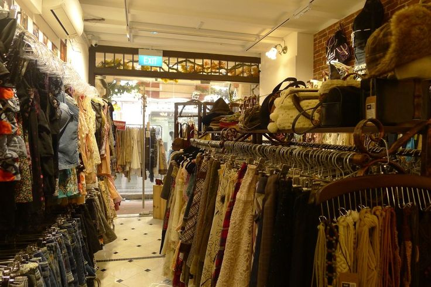

How to Style a Cardigan
Cardigan rajut bisa menjadi pilihan untuk tampilan santai maupun lebih rapi.
Read MoreTemukan cardigan rajut dan pakaian preloved pilihan untuk menemani gaya sehari-hari.

LOOP & LACE merupakan website yang dikembangkan berdasarkan usaha thrift keluarga kami, Poi Collection Thrift. Website ini menjadi media untuk memperkenalkan koleksi pakaian preloved dan pilihan fashion lainnya kepada pengunjung. Usaha ini dijalankan bersama keluarga, mulai dari memilih pakaian hingga melayani pelanggan. Kami ingin menghadirkan pilihan pakaian dengan model yang menarik, nyaman digunakan, dan dapat menunjang gaya sehari-hari. Melalui website ini, pengunjung dapat mengenal koleksi kami dengan lebih mudah dan mendapatkan informasi mengenai produk yang tersedia.
Cardigan rajut bisa menjadi pilihan untuk tampilan santai maupun lebih rapi.
Read MoreMemilih pakaian yang sesuai dengan gaya pribadi tidak harus rumit dan memusingkan.
Read MorePakaian preloved bisa menjadi pilihan untuk menemukan gaya yang berbeda.
Read More